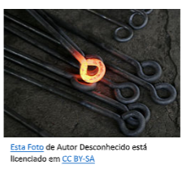
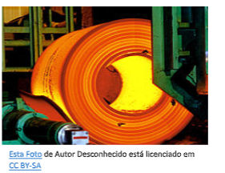
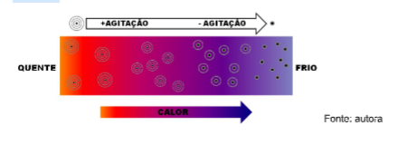
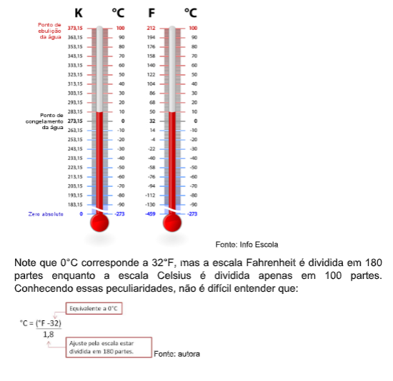
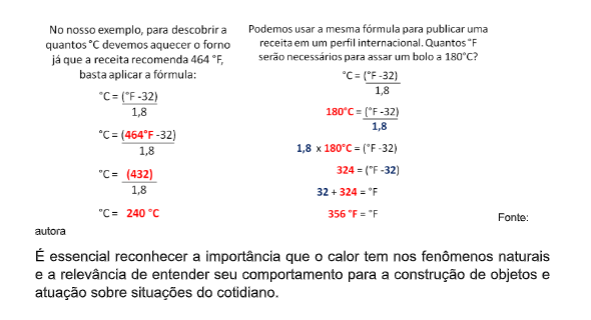
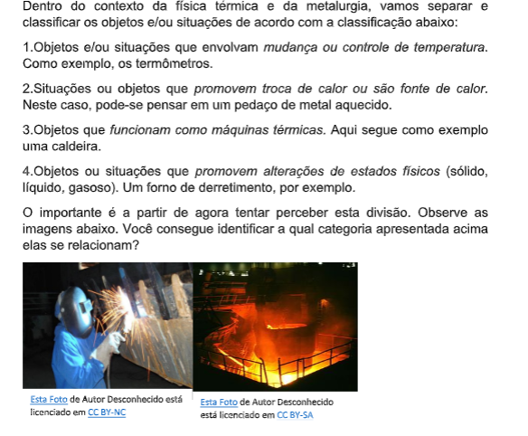
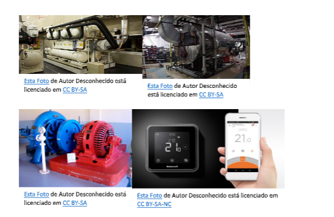

Capítulo 1
Metalurgia e a física térmica
Ao pensar na indústria metalúrgica, existem fenômenos térmicos? O que seria um fenômeno térmico? Se relacionam com a física?
ContextualizandoA física é uma ciência que estuda fenômenos naturais para explicar suas causas e consequências. Ela se ocupa não apenas do que acontece no nosso planeta, mas descreve como os fenômenos naturais acontecem em todo o universo. A matemática é a linguagem que expressa as leis e princípios da física, por isso, não estranhe ao encontrar fórmulas ao longo do texto, elas são nossas aliadas!
Apesar de explicar como as coisas acontecem, pensar onde a física está presente no nosso cotidiano realmente exige uma atenção especial, por isso separamos em cada capítulo uma área de atuação direta dela nas indústrias.
Dentro da metalurgia, há necessidade de aplicação constante de regras e conceitos da física, mas especificamente neste capítulo perceberemos os casos térmicos.
A medição e controle da variação na temperatura é essencial para a manipulação de metais e produção de objetos. Vamos pensar na têmpera do aço. Esse processo consiste em aquecer e resfriar a liga metálica para garantir a qualidade do produto. A variação adequada de temperatura altera a estrutura do material e é capaz de organizar os átomos do metal de forma a conferir maior dureza. A temperatura de um corpo determina várias de suas características. O exemplo mais presente no nosso dia a dia é a água. Imagine a cena: um metalúrgico artesanal quer forjar uma barra curva de ferro. Para isso, ele aquece a barra de ferro até que ela fique incandescente, a molda para que fique curvada e em seguida mergulha a barra curva na água. Imediatamente uma grande quantidade de água sobe como vapor. O que mudou na água para que ela deixasse de ser líquida e passasse a ser gasosa? Apenas a temperatura. A física explica: o calor transferido da barra de metal faz com que as moléculas de água vibrem com bastante intensidade, dizemos que elas ficam agitadas. Como consequência, as ligações entre elas se rompem e as moléculas de água tendem a se afastar, sozinhas, ficam mais leves e sobem na atmosfera. O mesmo fenômeno explica o amolecimento da barra de ferro, mas como as ligações químicas na barra de ferro são mais fortes, elas apenas "afrouxam", deixando o material maleável.
Para entender maisBasicamente, o aço é uma liga de ferro e carbono. O ferro é encontrado em toda crosta terrestre, fortemente associado ao oxigênio e à sílica. O minério de ferro é um óxido de ferro, misturado com areia fina. O carbono é também relativamente abundante na natureza e pode ser encontrado sob diversas formas. Na siderurgia, usa-se carvão mineral, e em alguns casos, o carvão vegetal. 
O carvão exerce duplo papel na fabricação do aço. Como combustível, permite alcançar altas temperaturas (cerca de 1.500º Celsius) necessárias à fusão do minério. Como redutor, associa-se ao oxigênio que se desprende do minério com a alta temperatura, deixando livre o ferro.
O processo de remoção do oxigênio do ferro para ligar-se ao carbono chama- se redução e ocorre dentro de um equipamento chamado alto forno. Antes de serem levados ao alto forno, o minério e o carvão são previamente preparados para melhoria do rendimento e economia do processo. O minério é transformado em pelotas e o carvão é destilado, para obtenção do coque, dele se obtendo ainda subprodutos carboquímicos.
No processo de redução, o ferro se liquefaz e é chamado de ferro gusa ou ferro de primeira fusão. Impurezas como calcário, sílica etc. formam a escória, que é matéria-prima para a fabricação de cimento. A etapa seguinte do processo é o refino. O ferro gusa é levado para a aciaria, ainda em estado líquido, para ser transformado em aço, mediante queima de impurezas e adições. O refino do aço se faz em fornos a oxigênio ou elétricos.
Finalmente, a terceira fase clássica do processo de fabricação do aço é a laminação. O aço, em processo de solidificação, é deformado mecanicamente e transformado em produtos siderúrgicos utilizados pela indústria de transformação, como chapas grossas e finas, bobinas, vergalhões, arames, perfilados, barras etc.
Com a evolução da tecnologia, as fases de redução, refino e laminação estão sendo reduzidas no tempo, assegurando maior velocidade na produção.
A capacidade de moldar materiais para transformá-los em ferramentas tem sido essencial para o desenvolvimento da sociedade, como consequência, os conhecimentos científicos dessa área foram e continuam sendo amplamente desenvolvidos. A física térmica é o ramo da ciência que estuda os fenômenos relacionados ao calor e temperatura.
(Re)construindo conhecimentosO calor é uma forma de energia que vai sempre do corpo de maior temperatura para o corpo de menor temperatura. Ou seja, calor é energia que flui de um corpo para outro.
Se obedecermos estritamente a linguagem científica, não é correto dizer "está calor hoje" ou "estou com muito calor". Como você acabou de ler, o calor é energia térmica que passa de um corpo para outro, logo nada pode possuir calor, pois ele só existe enquanto se movimenta!
Parece muito estranho, mas calor é uma grandeza física. Para que não haja confusão a forma correta de se expressar de acordo com a linguagem da física é "está quente hoje" ou "estou muito quente hoje".
Outro fato que você talvez não saiba: o frio não existe como uma grandeza física, o que existe são corpos com maior ou menor temperatura. Assim, ao invés de falarmos "feche a janela para o frio não entrar" a física nos instiga a falar "feche a janela para diminuir a perda de calor". Mesmo assim, apesar de não ser uma grandeza física a expressão "frio" faz parte e facilita nossa forma de comunicação.
Você consegue pensar em outras expressões que são afetadas por isso?
Mas o que é, então, a temperatura? Ela é a agitação de átomos e moléculas. Esta agitação é medida por termômetros, que podem ser de vários tipos. Quanto maior a agitação dos átomos, mais energia térmica está presente. A energia térmica é transferida na forma de calor até que se alcance o equilíbrio térmico.
O equilíbrio térmico acontece quando dois corpos atingem a mesma temperatura através da troca de calor. Você já deve ter feito um escalda pés, não é mesmo? Quando colocamos nossos pés em um recipiente com água morna, sentimos que ela está mais quente que nosso corpo, aos poucos esse diferença vai diminuindo até que não notamos mais nenhuma diferença de temperatura. O que está acontecendo ali? A energia térmica da água é transferida para o nosso corpo na forma de calor até que nossos pés possuam a mesma temperatura da água. Dizemos, então, que a água e os pés estão em equilíbrio térmico.
No exemplo acima, mesmo depois que os pés e a água atingem o equilíbrio térmico o calor não para de fluir e segue sendo trocado com o ambiente, por isso chega um momento em que a temperatura é semelhante àquela do entorno e costumamos dizer que se atingiu a temperatura ambiente.
A situação ideal é de equilíbrio térmico, sempre que houver diferença de temperatura o calor fluirá do corpo de maior temperatura para aquele de menor. Quando a temperatura entre dois corpos é igual (equilíbrio térmico) a troca de calor é a mesma, ou seja, flui na mesma intensidade entre eles. A forma de evitar esse equilíbrio é gerar energia térmica a partir de outras formas de energia, como a energia química dos alimentos que mantém nosso corpo aquecido ou a energia elétrica de abastece um aquecedor.
O calor pode ser transferido entre corpos de diferentes formas. Pode ser pelo simples contato entre duas superfícies (condução), pela movimentação de moléculas devido à agitação causada pela temperatura (convecção) ou pela emissão de ondas eletromagnéticas (radiação). Experimentamos isso a todo o momento. Quando encostamos a mão em uma xícara de café, o calor chega até nós por condução. Você também já deve ter percebido que quando aquecemos uma panela de água, a partir de determinado momento, é possível notar que ela se movimenta de forma que a camada que está mais próxima à superfície desce e a que está no fundo sobe, dizemos que houve convecção. E como o calor do Sol chega até a Terra? As estrelas produzem energia térmica que é emitida como ondas eletromagnéticas e assim pode viajar centenas de milhões de quilômetros pelo universo. O fogo também é capaz de emitir calor dessa forma, ou seja, por radiação (ou irradiação).
Um corpo submetido à variação de temperatura sofre como consequência uma mudança em suas dimensões. Quando aquecido, os átomos que o constituem passam a vibrar mais, nesse "empurra empurra" são formados espaços maiores entre eles e o corpo expande, ou seja, passa por dilatação térmica.
Ao contrário, quando um corpo é resfriado, seus átomos vibram cada vez menos e os espaços entre eles diminuem fazendo com que haja uma diminuição do tamanho, ou seja, uma contração térmica.
O quanto o corpo irá dilatar ou contrair quando exposto à variação de temperatura depende do material de que é feito. Por exemplo, o mercúrio sofre uma dilatação térmica muito maior do que a água. Entretanto, mesmo assim, é possível observar esse fenômeno na água, já notou ao ferver água como o nível na chaleira aumenta um pouquinho? Nesse caso você está observando a dilatação térmica da água.
Você já pensou sobre isso também?
Se a temperatura é a quantidade de energia térmica em determinado corpo, ela pode ser medida. Certamente você sabe que o instrumento utilizado para medir temperatura é o termômetro, que pode ser encontrado em diferentes modelos. O modelo mais tradicional é o de mercúrio (agora com comercialização proibida devido à toxidade do mercúrio). Todas as pessoas com um pouco mais experiência conhecem o procedimento: sacudir o termômetro para baixar a coluna de mercúrio, posicionar em uma região onde não haja muita variação de posição e aguardar por volta de cinco minutos. Passado o tempo, a coluna de mercúrio que ocupava um espaço pequeno dentro do tubo de vidro agora pode se estender por vários centímetros. Como isso é possível?

Primeiro, precisamos lembrar que a única variação no termômetro foi a temperatura, a quantidade de mercúrio lá dentro é exatamente a mesma. A conclusão mais simples é de que o calor do corpo é transmitido por condução até o equipamento, o que leva ao aumento da temperatura. Por sua vez, o aumento na temperatura faz com que o mercúrio expanda, quanto maior a temperatura, mais ele expande e maior é o comprimento da coluna de mercúrio dentro do termômetro. Esse fenômeno é conhecido como dilatação térmica.
A altura da coluna de mercúrio é padronizada por uma escala numérica que representa a temperatura. No Brasil, utilizamos a escala de graus Celsius (°C) para medir a temperatura, mas em outro países é utilizada a escala de grau Fahrenheit (°F) como veremos a seguir.
Quando medimos a temperatura utilizamos uma escala de referência. A escala de temperatura com a qual estamos mais familiarizados é a escala de graus Celsius, onde o 0ºC (zero graus Celsius) equivale à temperatura em que a água congela ao nível do mar e 100°C (cem graus Celsius) é a temperatura em que a água ferve ao nível do mar. Outra escala que podemos perceber em objetos fabricados pelos padrões dos Estados Unidos, por exemplo, é a de graus Fahrenheit. Já a unidade internacional de medida da temperatura é o Kelvin.
Digamos que você esteja usando um site de tradução para preparar uma receita. E o tradutor informa que o forno deve ser aquecido a 464 °F. A temperatura não pode ser traduzida, mas pode ser convertida para outra escala!
 Ação e Reflexão 

Agora pense e classifique outros objetos ou situações de sua experiência que podem ter relação com fenômenos térmicos. Não precisam ser objetos complexos, por exemplo, um palito de fósforo aceso.
Notará que alguns exemplos podem estar enquadrados em mais de uma categoria, não tem problema, a única questão importante é estar atento ao motivo que levou você a colocá-lo em mais de uma categoria.
O que aprendiQuando conseguimos perceber uma maneira nova de olhar as coisas, surgem diversos questionamentos, para ajudar, organize e faça a gestão dos teus conhecimentos, e, com isso, tente se dar conta ao se questionar: O que você aprendeu? Está aprendendo? Precisa aprender? Quer saber mais? São questionamentos que devem a todo momento fazer parte do nosso percurso.
Nesse capítulo conhecemos sobre a física térmica, que se dedica ao estudo da temperatura e do calor.
A física está presente em todos os aspectos da nossa vida, mas falamos um pouco mais de como os fenômenos térmicos possibilitam a manipulação de metais e construção de objetos através da Indústria Metalúrgica.
O calor é a energia térmica que flui de um corpo mais quente para outro mais frio até que se atinja o equilíbrio térmico.
A temperatura é a medida da agitação dos átomos que compõem os corpos. Quanto maior a agitação, maior a temperatura, que interpretamos como uma sensação de quente.
A temperatura é a medida da agitação dos átomos que compõem os corpos. Quanto maior a agitação, maior a temperatura, que interpretamos como uma sensação de quente.
A temperatura pode ser medida em diferentes escalas. No Brasil, utilizamos a escala de graus Celsius, cujo 0°C se refere à temperatura em que a água congela e 100°C se refere à temperatura em que a água ferve (quando ao nível do mar).